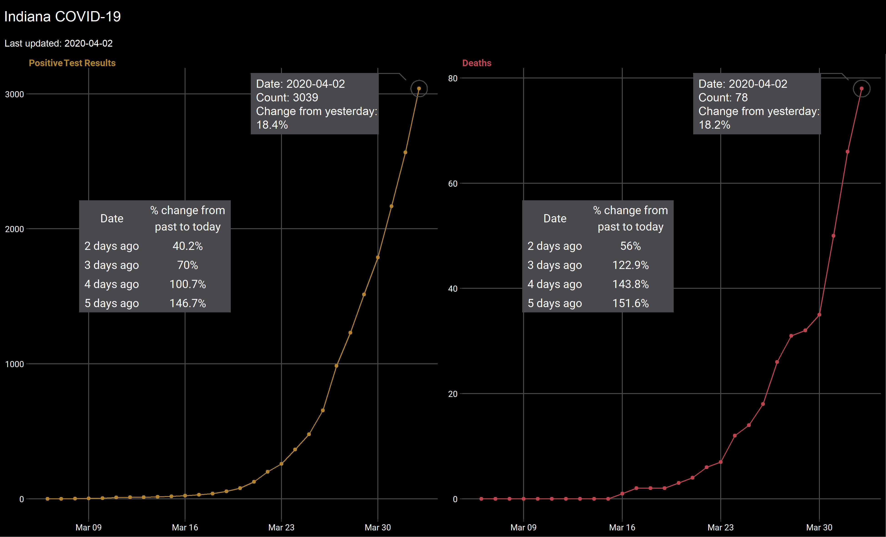

gtable
Misc
- Tools to make it easier to work with tables of grobs. Undergirds {ggplot2}.
- Also see {ggpp} which seems to have similar functionality but at a higher level of abstraction. It’s ggplot syntax for labels, annotations and insets.
- The tables used in the examples were made with {grid}.
- See Indiana COVID-19 Tracker project for an example.
Coordinate System
-
grob_obj <- ggplot2::ggplotGrob(scatter_plot) # or tableGrob(), etc. gtable_show_layout(grob_obj)ggplotGrobtakes a {ggplot} object and returns a grob- The layout plot is jacked-up but you can still make out some coordinates
- 1st coordinate is up and down
- Above the center cell, (7,5), is (6,5)
- Below the center cell, (7,5), is (8,5)
- 2nd coordinate is left and right
- Left of the center cell is (7,4)
- Right of the center cell is (7,6)
Get Grob Cell Coordinates Dataframe
(layout_df <- grob_obj$layout) #> t l b r z clip name #> 18 1 1 12 9 0 on background #> 1 6 4 6 4 5 off spacer #> 2 7 4 7 4 7 off axis-l #> 3 8 4 8 4 3 off spacer #> 4 6 5 6 5 6 off axis-t #> 5 7 5 7 5 1 on panel #> 6 8 5 8 5 9 off axis-b #> 7 6 6 6 6 4 off spacer #> 8 7 6 7 6 8 off axis-r #> 9 8 6 8 6 2 off spacer #> 10 5 5 5 5 10 off xlab-t #> 11 9 5 9 5 11 off xlab-b #> 12 7 3 7 3 12 off ylab-l #> 13 7 7 7 7 13 off ylab-r #> 14 4 5 4 5 14 off subtitle #> 15 3 5 3 5 15 off title #> 16 10 5 10 5 16 off caption #> 17 2 2 2 2 17 off tag- Coordinates: t (top), l (left), b (bottom), r (right)
- Each row is a grob of the graph
- The (7,5) cell is called the “panel†grob, which is where the points of scatter plot go.
- It has cell coordinates t = 7, l = 5, b = 7, r = 5
- Except for the background grob, the first pair of coordinates is repeated in the second pair of coordinates
- e.g. y-axis (axis-l) grob is 7,4,7,4
- I think if one pair either t and l or b and r have different coordinates then the grob overlaps cells
{kind=link}
Add a Table to a Line Plot
Imagine your grid layout
- I want the table a little right of the y-axis and around the middle in terms of the height
- The goal is to carve out a cell in the layout where you want to place your table
- Layout
- 3 Rows:
- 1st Row: Above the table
- 2nd Row: The table
- 3rd Row: Below the table
- 3 Columns:
- 1st Column: Left of the table
- 2nd Column: The table
- 3rd Column: Right of the table
- 3 Rows:
Specify the proportions of each row and column
g_tab <- gtable(widths = unit(c(0.4, 0.6, 2), "null"), heights = unit(c(0.8, 0.4, 1), "null"))- widths: Widths of the columns
- Specifying 3 units for the total width
- 0.4 will include the y-axis and a little more
- 0.6 is the width of the cell for my table
- 2 is for the rest of the graph
- “null†just means no units like “cm†or “in†is used
- From left to right, the numbers describe columns from left to right
- heights: Heights of rows
- Similar explanations as for widths
- From left to right, the numbers describe rows from top to bottom
- widths: Widths of the columns
Add line plot grob to the table grob
g_tab <- gtable_add_grob(g_tab, plot_grob, t = 1, b = 3, l = 1, r = 3)- plot_grob can be one ggplot grob object or a list of grob objces
- If you use a list of objects, then the z arg should be used to specify the order
- Specifying the order says how you want them layered
- The first grob added spans the layout
- You’ll add this to the “panel†cell
- We have 3 rows, therefore t = 1 (top), b = 3 (bottom) spans the height of the layout
- We have 3 columns, so l = 1 (left), r = 3 (right) spans the width of the layout
View the layout and make sure which cell you want your table in
gtable_show_layout(g_tab)Add the table grob to that cell
g_tab <- gtable_add_grob(g_tab, tab_grob, t = 2, l = 2)- Only need t and l or b and r to specify the location.
- Both sets are the same since you’re specifying only one cell
- e.g. If you wanted to span the 2 middle left cells it’d be b = 2, t = 2, l = 1, r = 2
- Only need t and l or b and r to specify the location.
-
grid::grid.draw(g_tab) or plot(g_tabb)- Top-Right annotation block is from {ggforce} using regular methods
Save it
ggsave("R/Projects/My-Project/plot-with-gtab.png", plot = g_tab, dpi = "print", width = 33, height = 20, units = "cm")- Images may show something different than what in your view or plots pane. So may have to adjust (This might have been corrected with {ragg})
{kind=link}
Add Tables to Multiple Plots
This is slightly different than in the project I used this. In that project, I moved the subtitle row to create a caption. See Indiana COVID-19 Tracker project for details.
Add 2 tables to 2 line graphs to cells (4,2) and (4,5) along with a title and subtitle
Final Result
title_grob <- grobTree(rectGrob(gp = gpar(fill = "black")), textGrob("Indiana COVID-19", hjust = 3.75, gp = gpar(fontsize = 15, col = "white"))) subtitle_grob <- grobTree(rectGrob(gp = gpar(fill = "black")), textGrob(glue("Last updated: {label_dat$date[[1]]}"), hjust = 4.05, gp = gpar(fontsize = 10, col = "white"))) # construct layout gtab <- gtable::gtable(widths = unit(c(0.4, 0.6, 1, 0.4, 0.6, 1), "null"), heights = unit(c(0.12, 0.08, 0.54, 0.43, 0.83), "null")) # add plots gtab <- gtable::gtable_add_grob(gtab, pos_plot_grob, t = 3, b = 5, l = 1, r = 3) gtab <- gtable::gtable_add_grob(gtab, dea_plot_grob, t = 3, b = 5, l = 4, r = 6) # add titles gtab <- gtable::gtable_add_grob(gtab, title_grob, t = 1, b = 1, l = 1, r = 6) gtab <- gtable::gtable_add_grob(gtab, subtitle_grob, t = 2, b = 2, l = 1, r = 6) # find cell coordinates to place tables # gtable::gtable_show_layout(gtab) # add tables, only need two coord since we don't want to table to span more than one cell gtab <- gtable::gtable_add_grob(gtab, pos_tab_grob, t = 4, l = 2) gtab <- gtable::gtable_add_grob(gtab, dea_tab_grob, t = 4, l = 5) # grid.draw(gtab) # grid.newpage()
{kind=link}
{kind=link}